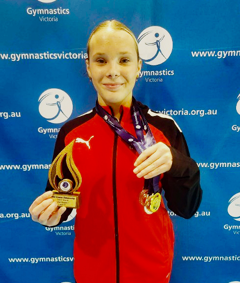

On 3 May 2026, Terry Cliff passed away, aged nearly 88. He had spent 78 years connected to the YMCA, 27 of them as Executive Director of YMCA Geelong, and in that time transformed a warehouse in Newtown into one of regional Victoria's most significant gymnastics facilities. The Y has published a full tribute to Terry on their website, and it is worth reading. Three weeks later, the club he helped build arrived at the Senior Victorian Championships and won team gold at Level 8 and Level 10, produced four individual medallists at international levels, and had an athlete sweep every event in the Level 8 unders division. The timing was coincidence. The achievements were not.
In our last profile, we looked at MYC Gymnastics on the Mornington Peninsula, a club with 70 years of history and the Victorian record for MAG all-around medals at Level 8 and above. The Y Geelong sits across the bay, in a different kind of Victorian gymnastics story, one built on a strong international development pathway and a WAG programme that has been quietly accumulating medals for three decades.
The foundation
Y Geelong's gymnastics programme began with improvisation. In the 1970s, the YMCA was running gymnastics outreach in local school gyms across Geelong. In the late 1970s, the Y secured an old RSL woollen mill on Pakington Street, giving the programme a permanent base. Terry Cliff, who had arrived as Executive Director in 1973 and brought eight years of coaching experience from the NSW state women's gymnastics team, helped establish the formal club that would grow from there.
In 1988, the club competed at the Victorian Championships for the first time and won both individual and team honours. As first impressions go, it set a tone the programme has spent the decades since living up to.
By the mid-1990s, the Pakington Street facility had been outgrown. In 1995–96, the club moved to Newtown Stadium, converted from a Campbell's Cash and Carry Warehouse on Riversdale Road, which remains their base today. Cliff oversaw the transformation of that building before retiring in 2000, honoured by the Y with Life Membership, Hall of Fame induction, and recognition as a Programme Pioneer.
In 2014, the club absorbed Geelong Gymnastics Club when that programme became unsustainable, which broadened the athlete base. And in 2016, a cohort of high-performance athletes (Elly Bayes, Mila Blythe, Rose Blackhall, Mirana Perkins, and Lhogan Foxman) transitioned to the National Centre of Excellence in Melbourne, a marker of where the international pathway had reached by that point. The Y Geelong gymnastics programme operates as part of a broader charitable, not-for-profit organisation, and that community-first structure has likely shaped the way the programme approaches development and access across different levels.
The WAG programme
Ninety-one WAG athletes appear in our database for The Y Geelong, with 646 results across three seasons. The medal count reflects the depth: 51 all-around medals at Level 8 and above across our data, spread across multiple athletes and multiple seasons.
The 2026 Senior Victorian Championships were the standout moment of the recent season. Ivy Alford swept the Level 8 Unders division, winning the all-around with 47.816 and taking gold on every individual apparatus. Ailani Songsaeng placed second in the all-around at 44.966. The broader Level 8 squad, also including Laura Bardon, Kalani Coates, Tara Zeinstra, and Abigail Farrell, won the Level 8 team gold.

At Level 10, Isobel Vagg is the club's standout domestic performer. Her best all-around of 51.299 came at Trial 1 in April 2026, placing her second in the trial field. She backed it up with 49.865 and bronze at the Senior Vics. Vivian Bayles (49.532, 4th), Mia Fewster (48.598, 6th) and Maya Simanjuntak (46.933, 12th) completed a Level 10 team that took the Level 10 team gold. Mia Fewster also won the Beam title at that competition.
The club's WAG depth extends from Level 2 through Level 10, with Level 5 their largest single cohort at 162 results across our data. That base likely goes some way to explaining the medal count at the top.
The international pathway
The number that stands out most in The Y Geelong WAG data is the depth of the international stream. Eleven athletes in our database have competed at international levels, across the full range from Developing International through Senior International and Developing International 16+.
At the 2026 Senior Victorian Championships, four of them medalled on the same day. Lucy Riddle won the Future International all-around with 50.35. Olivia Meaney won the Developing International all-around with 49.7. Isabelle McDermott placed fifth in the Future International field. Alyssa Rantino placed third in the Developing International 16+ division with 45.3.
Four individual medallists from one club at international levels in a single championship is not something most clubs can match.
Olivia Meaney's trajectory across our data is notable in itself: she holds results at both Developing International and Future International across multiple seasons, with a best of 50.266 in the Future International field at the 2024 Senior Vics. Asher Bayles has competed at Senior International level, with a best of 47.3. Vivian Bayles, who also competed at Level 10 domestically in 2026, has results at Junior International level.
The club describes its International Development Stream as having 33 current participants and positions it as one of the leaders in the sport at that level. The 2016 transition of Bayes, Blythe, Blackhall, Perkins, and Foxman to the National Centre shows that pathway has real history behind it. The 2026 senior championship results show it is still producing.